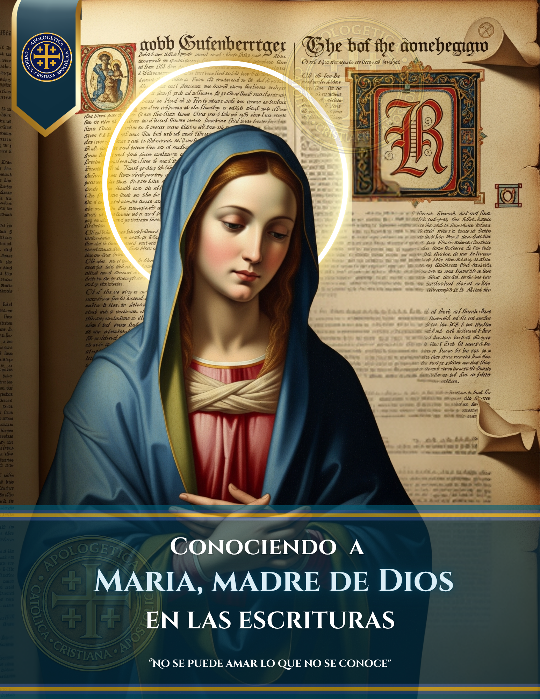
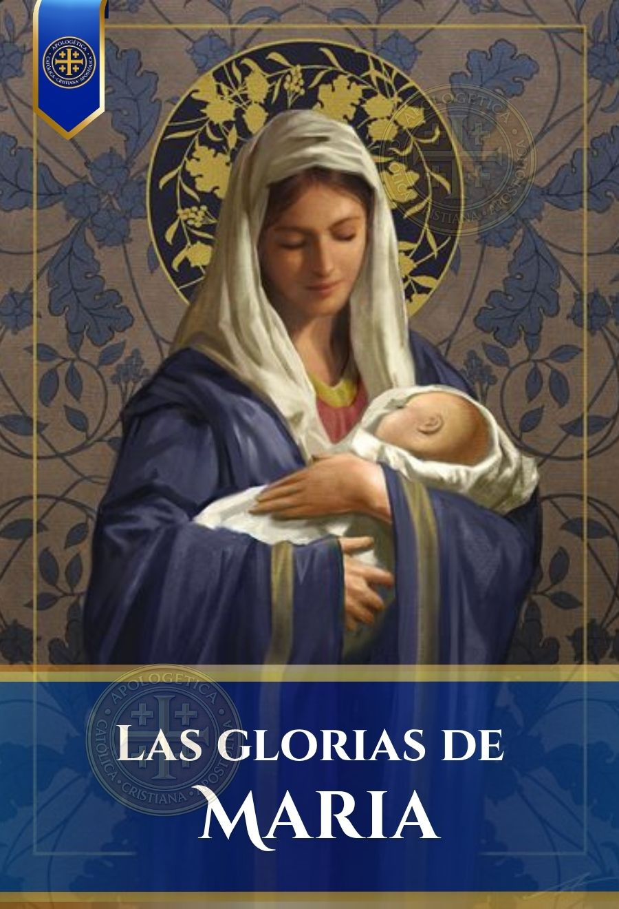

María en las Escrituras
Un recorrido bíblico profundo que demuestra la presencia y el papel de la Santísima Virgen María en el plan de salvación, con sólido respaldo en la Tradición y el Magisterio.
Abrir Documento
Las Glorias de María
Obra cumbre de San Alfonso María de Ligorio. Una explicación detallada de la Salve Regina y las devociones marianas sustentadas por los Santos Padres.
Abrir Documento
Título del Próximo Libro
Descripción del próximo documento de Mariología que añadirás a la biblioteca.
Próximamente